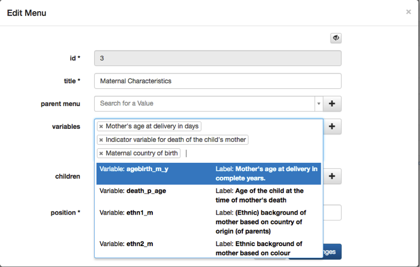

LifeCycle manuals
How to add core variables to the catalogue
Step 1
Open the "Core
variable" table
Step 2
To add a core variable, click on the green +, left in the header of the table.

Step 3
Fill out the form.

Step 4
Open the "Menu" table.
In this example we will be adding a variable to "maternal characteristics” item.
Step 5
Click on the edit row of the maternal characteristics row, which is the white button on the
beginning of the row.
Step 6
To add your core variable to the menu item, select a value in the "variables" attribute and
save the changes.
Please note that the dropdown in the variables starts working as soon as you start
typing in the text box.

Step 7
You can select as many values as you want. To close the dropdown: click on the white part of
the pop up next to the “+” buttons.

IMPORTANT: Do not click in the grey area outside the modal, this causes your pop up to
close.

The maternal characteristics and socio demographic characteristics are already related in
the
menu. You can select your variables in the socio-demographic characteristics and they will
automatically be stored in socio-demographic characteristics, which have as parent, the
maternal
characteristics.